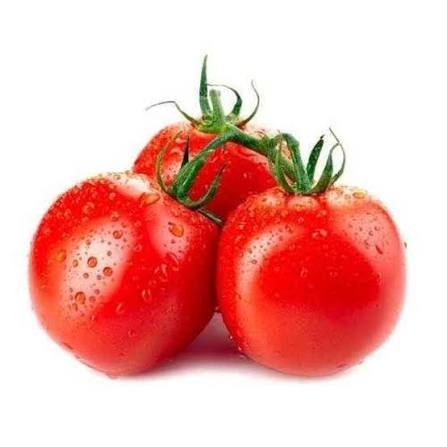

🌱 Descrição
O tomate é uma das hortaliças mais cultivadas e consumidas no mundo. Seus frutos são ricos em vitaminas, minerais e antioxidantes, sendo muito utilizados na alimentação.
🌎 Origem
Originário da região dos Andes, na América do Sul, foi domesticado no México e atualmente é cultivado em praticamente todo o mundo.
🌱 Cuidados
- ☀️ Necessita de sol pleno.
- 💧 Regar regularmente sem encharcar.
- 🌿 Solo fértil e rico em matéria orgânica.
- 🪵 Utilizar tutor para sustentar a planta.
🦋 Atrai quais polinizadores?
Abelhas, mamangavas e outros insetos polinizadores.
🍽️ Parte comestível
Os frutos maduros.
💚 Benefícios para a saúde
Rico em vitamina C, vitamina A, potássio, fibras e licopeno, importante antioxidante natural.
🌼 Curiosidade
Botanicamente, o tomate é considerado um fruto, embora seja utilizado como hortaliça na culinária.
🐝 Importância para o meio ambiente
Atrai polinizadores e contribui para a biodiversidade da horta escolar.
🌾 Época de plantio
Pode ser cultivado durante praticamente todo o ano em regiões de clima quente.
📱 Conheça mais sobre o Tomate
Aponte a câmera do celular para o QR Code e descubra mais informações sobre esta planta.